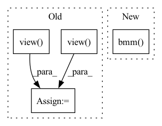

Pattern ID :13029

Before Change
batch_size, embedded_dims, n_bins, n_frames = input.size()
batch_size, n_sources, n_bins, n_frames = target.size()
input = input.view(batch_size, embedded_dims, n_bins * n_frames)
target = target.view(batch_size, n_sources, n_bins * n_frames)
input_transposed = input.permute(0, 2, 1).contiguous() // (batch_size, n_bins * n_frames, embedded_dims)
target_transposed = target.permute(0, 2, 1).contiguous() // (batch_size, n_bins * n_frames, n_sources)
affinity_input = torch.bmm(input, input_transposed) // (batch_size, embedded_dims, embedded_dims)
affinity_target = torch.bmm(target, target_transposed) // (batch_size, n_sources, n_sources)
affinity_correlation = torch.bmm(input, target_transposed) // (batch_size, embedded_dims, n_sources)
loss_input = torch.sum(affinity_input**2, dim=(1,2))
loss_target = torch.sum(affinity_target**2, dim=(1,2))
loss_correlation = torch.sum(affinity_correlation**2, dim=(1,2))
loss = loss_input + loss_target - 2 * loss_correlation // (batch_size,)
if batch_mean:
loss = loss.mean(dim=0) // ()
After Change
D = torch.diag_embed(1 / torch.sqrt(YY1 + eps)) // (batch_size, n_samples, n_samples)
VD, YD = torch.bmm(trans_V, D), torch.bmm(trans_Y, D) // (batch_size, embed_dim1, n_samples), (batch_size, embed_dim2, n_samples)
VDV, YDY = torch.bmm(VD, V), torch.bmm(YD, Y) // (batch_size, embed_dim1, embed_dim1), (batch_size, embed_dim2, embed_dim2)
VDY = torch.bmm(VD, Y) // (batch_size, embed_dim, embed_dim2)
loss = torch.sum(VDV**2, dim=(1, 2)) + torch.sum(YDY**2, dim=(1, 2)) - 2 * torch.sum(VDY**2, dim=(1, 2)) // (batch_size,)
In pattern: SUPERPATTERN
Frequency: 3
Non-data size: 4
Instances
Fragment ID: 44030159
Project Name: tky823/dnn-based_source_separation
Commit Name: 8860d8d92de4ba4390fa89247619810b0c821fe6
Time: 2021-11-22
Author: delta9guitar97@gmail.com
File Name: src/criterion/deep_clustering.py
M Class Name: AffinityLoss
N Class Name: AffinityLoss
M Method Name: forward(4)
N Method Name: forward(4)
M Parent Class: nn.Module
N Parent Class: nn.Module
M File Name: src/criterion/deep_clustering.py
N File Name: src/criterion/deep_clustering.py
M Start Line: 19
M End Line: 34
N Start Line: 26
N End Line: 37
'>
Before Change
raise ValueError("The weight list should be a 2d tensor!")
num_node = feat_list[0].shape[0]
weighted_feat = torch.mul(feat_list[0], weight_list[:, 0].view(num_node, 1))
for i in range(1, len(feat_list)):
weighted_feat = weighted_feat + torch.mul(feat_list[i], weight_list[:, i].view(num_node, 1))
"""feat_reshape = torch.stack(feat_list, dim=2)
weight_reshape = weight_list.unsqueeze(dim=2)
After Change
feat_reshape = torch.stack(feat_list, dim=2)
weight_reshape = weight_list.unsqueeze(dim=2)
weighted_feat = torch.bmm(feat_reshape, weight_reshape).squeeze(dim=2)
return weighted_feat
'>
Fragment ID: 44030151
Project Name: pku-dair/sgl
Commit Name: 18054d1299613d29452a2ea780ffc54d98e1c5bd
Time: 2022-02-24
Author: shengzeang@live.com
File Name: models/utils.py
M Class Name: AnonimousClass
N Class Name: AnonimousClass
M Method Name: two_dim_weighted_add(2)
N Method Name: two_dim_weighted_add(2)
M Parent Class:
N Parent Class:
M File Name: models/utils.py
N File Name: models/utils.py
M Start Line: 54
M End Line: 59
N Start Line: 54
N End Line: 56
'>
Before Change
// comptute hard codevector distribution (one hot)
codevector_idx = hidden_states.argmax(dim=-1)
update_values = torch.ones_like(codevector_idx.view(-1, 1), dtype=hidden_states.dtype)
codevector_probs = hidden_states.new_zeros(*hidden_states.shape).scatter_(
-1, codevector_idx.view(-1, 1), update_values
)
codevector_probs = codevector_probs.view(batch_size * sequence_length, self.num_groups, -1)
After Change
codevector_probs = codevector_probs.view(batch_size * sequence_length, self.num_groups, -1)
codebook = self.codevectors[0, :, :]
codebook = codebook.view(self.num_groups, self.num_vars, -1)
codevectors = torch.bmm(codevector_probs.permute(1, 0, 2), codebook).permute(1, 0, 2)
codevectors = codevectors.reshape(batch_size, sequence_length, -1)
codevectors = codevectors.reshape(batch_size, sequence_length, -1)
'>
Fragment ID: 44030146
Project Name: huggingface/optimum-graphcore
Commit Name: 2ec4ed72ea362414d20c9b112072f3aa7b3d399a
Time: 2022-07-29
Author: 91201457+thorinf@users.noreply.github.com
File Name: optimum/graphcore/models/wav2vec2/ipu_gumbel_vector_quantizer.py
M Class Name: IPUWav2Vec2GumbelVectorQuantizer
N Class Name: IPUWav2Vec2GumbelVectorQuantizer
M Method Name: forward(4)
N Method Name: forward(4)
M Parent Class: Wav2Vec2GumbelVectorQuantizer
N Parent Class: Wav2Vec2GumbelVectorQuantizer
M File Name: optimum/graphcore/models/wav2vec2/ipu_gumbel_vector_quantizer.py
N File Name: optimum/graphcore/models/wav2vec2/ipu_gumbel_vector_quantizer.py
M Start Line: 68
M End Line: 102
N Start Line: 80
N End Line: 110